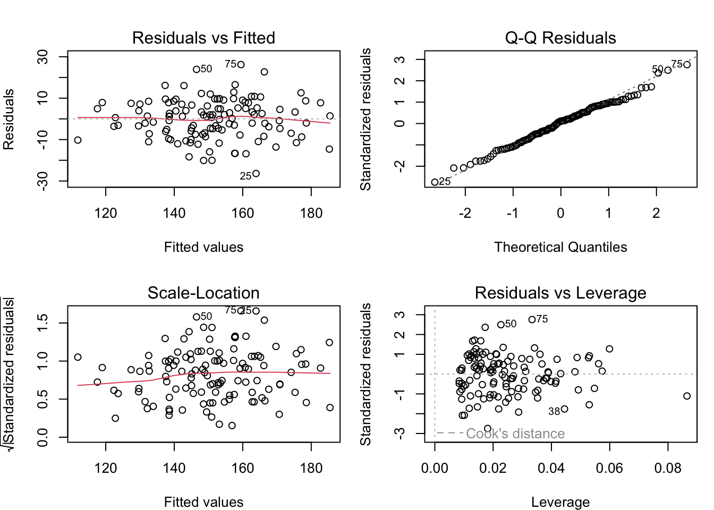
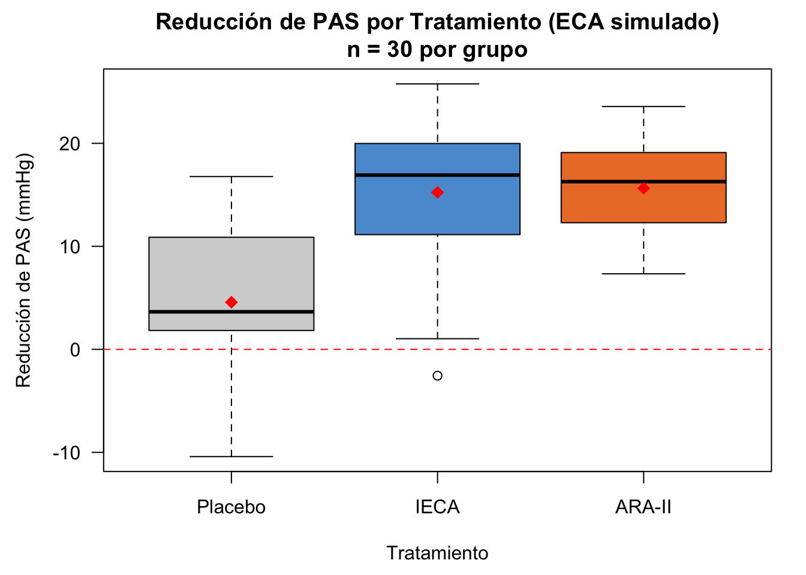

En esta semana extendemos la regresión lineal simple a múltiples variables predictoras. En medicina, raramente un único factor explica un desenlace clínico: la presión arterial depende de la edad, el IMC, el sexo y el tabaquismo simultáneamente; la supervivencia oncológica depende del estadio, el tratamiento y la edad al diagnóstico. La regresión lineal múltiple nos permite cuantificar el efecto de cada variable controlando por las demás.
10.1 El Modelo de Regresión Lineal Múltiple
La regresión múltiple permite modelar relaciones complejas mediante varias variables predictoras simultáneamente.
NotaDefinición: Modelo de Regresión Lineal Múltiple
El modelo de regresión lineal múltiple con \(p\) variables predictoras es:
para \(i = 1, 2, \ldots, n\) observaciones, donde:
\(Y_i\) es la variable respuesta (dependiente)
\(X_{ji}\) son las variables predictoras (independientes) para \(j = 1, \ldots, p\)
\(\beta_0\) es la ordenada al origen (intercepto)
\(\beta_j\) es el coeficiente de regresión parcial de \(X_j\) — representa el cambio esperado en \(Y\) ante un aumento unitario de \(X_j\), manteniendo todas las demás variables constantes
\(U_i\) es el término de error aleatorio con \(E(U_i) = 0\) y \(\text{Var}(U_i) = \sigma_U^2\)
Interpretación de coeficientes parciales: El coeficiente \(\beta_j\) mide el efecto de \(X_j\) sobre \(Y\) después de controlar (ajustar) por todas las otras variables predictoras en el modelo. Esto es fundamental en la investigación médica para separar el efecto de cada factor de riesgo del de los demás.
TipEjemplo: Presión Arterial Sistólica — Extensión del modelo simple
Continuando con el estudio de hipertensión de la semana anterior (120 pacientes adultos), ahora incluimos dos predictores para explicar la presión arterial sistólica (PAS):
\(\beta_1\) mide el cambio esperado en PAS por cada año adicional de edad, manteniendo el IMC fijo
\(\beta_2\) mide el cambio esperado en PAS por cada kg/m² adicional de IMC, manteniendo la edad fija
Interpretación hipotética: si \(\hat{\beta}_1 = 0.60\) mmHg/año y \(\hat{\beta}_2 = 1.80\) mmHg/(kg/m²), un paciente que envejece 10 años (con mismo IMC) tendrá en promedio 6 mmHg más de PAS; un paciente con 5 kg/m² más de IMC (con misma edad) tendrá en promedio 9 mmHg más de PAS.
10.2 Formulación Matricial del Modelo
Con múltiples variables predictoras, la notación escalar se vuelve engorrosa. La formulación matricial simplifica significativamente el tratamiento matemático.
\(\mathbf{U} = \begin{bmatrix} U_1 \\ U_2 \\ \vdots \\ U_n \end{bmatrix}\) es el vector \(n \times 1\) de errores
Nota: La primera columna de \(\mathbf{X}\) contiene unos (para el intercepto).
Ejemplo: Para el modelo PAS ~ Edad + IMC con \(n = 120\) pacientes, \(\mathbf{X}\) es una matriz \(120 \times 3\): columna de unos, columna de edades y columna de IMC de cada paciente.
10.3 Estimación de Parámetros: Mínimos Cuadrados Ordinarios
10.3.1 Derivación del Estimador OLS
El método de mínimos cuadrados ordinarios (OLS, Ordinary Least Squares) minimiza la suma de cuadrados residual:
La matriz \(\mathbf{X}^T\mathbf{X}\) es singular (no invertible) si:
Las variables predictoras son linealmente dependientes (colinealidad exacta)
Una variable es combinación lineal exacta de otras
Ejemplo médico: Si incluimos tanto el peso (kg) como el IMC (kg/m²) y la altura al cuadrado, hay colinealidad exacta porque IMC = peso/altura². R eliminará automáticamente una de las variables, pero esto debe evitarse en el diseño del estudio.
10.4 Matriz de Varianza-Covarianza de los Coeficientes
NotaDefinición: Matriz de Varianza-Covarianza
Bajo los supuestos del modelo de regresión lineal múltiple, la matriz de varianza-covarianza de los coeficientes estimados es:
donde \(\hat{u}_i = Y_i - \hat{Y}_i\) son los residuos estimados.
AdvertenciaResultado Importante
\[s^2 = \frac{\text{RSS}}{n-p-1}\]
es un estimador insesgado de \(\sigma_U^2\). Note que dividimos por \(n-p-1\) (grados de libertad), no por \(n\). En el modelo PAS ~ Edad + IMC + Sexo con \(n = 120\) pacientes y \(p = 3\) predictores, los grados de libertad son \(120 - 3 - 1 = 116\).
10.5 Variables Indicadoras (Dummy)
Cuando tenemos variables predictoras categóricas (sexo, grupo de tratamiento, estadio tumoral), usamos variables indicadoras (0/1) para incorporarlas en el modelo lineal.
NotaDefinición: Variables Indicadoras
Una variable indicadora para una categoría es:
\[X_j = \begin{cases} 1 & \text{si la observación pertenece a la categoría } j \\ 0 & \text{en caso contrario} \end{cases}\]
Para una variable categórica con \(m\) niveles, utilizamos exactamente \(m-1\) variables indicadoras (dejamos una categoría como referencia o base).
TipEjemplo: Peso al Nacer según Edad Gestacional y Sexo
Un neonatólogo estudia la relación entre edad gestacional, sexo y peso al nacer en 189 recién nacidos del Hospital Materno-Infantil de Granada. Define:
\(Y_i\) = peso al nacer (gramos)
\(X_{1i}\) = edad gestacional (semanas)
\(X_{2i}\) = variable indicadora: 1 si el bebé es niña, 0 si es niño
La diferencia de \(-163.04\) gramos entre niñas y niños es el efecto del sexo controlando por la edad gestacional. Las niñas pesan en promedio 163 g menos que los niños a igual edad gestacional. Por cada semana adicional de gestación, el peso aumenta en promedio 120.89 g en ambos sexos.
Predicción: Un niño de 38 semanas: \(\hat{P} = -1610.28 + 120.89 \times 38 = 2983\) g. Una niña de 38 semanas: \(\hat{P} = 2983 - 163 = 2820\) g.
10.6 Bondad de Ajuste: \(R^2\) y \(R^2\) Ajustado
10.6.1 Coeficiente de Determinación Múltiple
En regresión múltiple, el coeficiente \(R^2\) se define igual que en regresión simple:
\(\text{RSS} = \sum_{i=1}^n (Y_i - \hat{Y}_i)^2\) (suma de cuadrados residual)
\(\text{SST} = \sum_{i=1}^n (Y_i - \bar{Y})^2\) (suma de cuadrados total)
\(\text{ESS} = \sum_{i=1}^n (\hat{Y}_i - \bar{Y})^2\) (suma de cuadrados explicada)
Problema clínico: Si al modelo PAS ~ Edad añadimos variables irrelevantes (número de calzado del paciente), \(R^2\) aumentará o se mantendrá, aunque el número de calzado no prediga la PAS. Este problema nos lleva al \(R^2\) ajustado.
10.6.2\(R^2\) Ajustado
AdvertenciaResultado Importante: \(R^2\) Ajustado
El coeficiente de determinación ajustado penaliza por el número de parámetros:
\(R^2_{\text{adj}}\)puede disminuir si añadimos una variable que no mejora el modelo
Es más útil que \(R^2\) para comparar modelos con diferente número de predictores
Ejemplo médico: Modelo 1 (PAS ~ Edad): \(R^2 = 0.504\), \(R^2_{\text{adj}} = 0.499\). Modelo 2 (PAS ~ Edad + IMC): \(R^2 = 0.561\), \(R^2_{\text{adj}} = 0.553\). El \(R^2_{\text{adj}}\) aumenta al añadir el IMC, lo que indica que esta variable aporta información real más allá de la edad.
10.7 Criterios de Información para Selección de Modelos
Además de \(R^2_{\text{adj}}\), existen criterios de información que penalizan la complejidad del modelo:
AdvertenciaDefinición: AIC y BIC
Criterio de Información de Akaike (AIC):\[\text{AIC} = -2 \log L + 2(p+1)\]
Criterio de Información Bayesiano (BIC):\[\text{BIC} = -2 \log L + (p+1)\log(n)\]
donde \(L\) es la función de verosimilitud maximizada y \(p+1\) es el número de parámetros (incluyendo \(\sigma_U^2\)).
Para modelos normales: \[\text{AIC} = n \log(\text{RSS}/n) + 2(p+1)\]\[\text{BIC} = n \log(\text{RSS}/n) + (p+1)\log(n)\]
Regla de decisión: Seleccionar el modelo con menor AIC o BIC.
AIC usa penalización moderada (factor 2): útil en contextos predictivos
BIC usa penalización más fuerte (factor \(\log n\)): favorece modelos más parsimoniosos, preferible en investigación clínica confirmatoria
Ejemplo: Para comparar modelos de predicción de HbA1c con distintas combinaciones de variables (IMC, edad, actividad física, tabaquismo), el BIC es más apropiado en un estudio con \(n = 200\) porque \(\log(200) = 5.30 > 2\), penalizando más fuertemente la complejidad.
10.8 Pruebas de Hipótesis para Coeficientes Individuales
donde \(\hat{\text{SE}}(\hat{\beta}_j) = \sqrt{s^2 [(\mathbf{X}^T\mathbf{X})^{-1}]_{jj}}\) es el error estándar estimado.
Procedimiento de prueba:
Hipótesis:\(H_0: \beta_j = 0\) vs. \(H_1: \beta_j \neq 0\)
Estadístico: Calcular \(t_j\) como arriba
Valor p:\(p\text{-valor} = 2 \cdot P(t_{n-p-1} > |t_j|)\)
Decisión: Rechazar \(H_0\) si \(|t_j| > t_{1-\alpha/2, n-p-1}\) o si \(p\text{-valor} < \alpha\)
Interpretación clínica clave: Rechazar \(H_0: \beta_j = 0\) significa que la variable \(X_j\) aporta información significativa sobre \(Y\)después de controlar por todos los demás predictores del modelo.
10.9 Prueba F para Comparación de Modelos Anidados
Cuando tenemos dos modelos donde uno está anidado dentro del otro (sus variables predictoras son un subconjunto), podemos usar una prueba F para comparar su bondad de ajuste.
NotaDefinición: Modelos Anidados
Decimos que el Modelo 1 es anidado en el Modelo 2 si los predictores del Modelo 1 son un subconjunto de los del Modelo 2.
Regla de decisión: Rechazar \(H_0\) si \(F > F_{1-\alpha, p_2-p_1, n-p_2-1}\).
Caso especial: Si el Modelo 1 contiene solo el intercepto, esta prueba evalúa si al menos una variable predictora es significativa (prueba F global).
10.10 ANOVA como Modelo Lineal
El análisis de varianza (ANOVA) es un caso especial de regresión lineal donde los predictores son variables categóricas (factores).
TipEjemplo: Comparación de Tres Tratamientos Antihipertensivos
En un ensayo clínico aleatorizado (ECA), 90 pacientes hipertensos son asignados aleatoriamente (30 por grupo) a tres tratamientos durante 12 semanas:
Grupo control: Placebo
Grupo A: IECA (inhibidores de la enzima convertidora de angiotensina, ej. enalapril)
Grupo B: ARA-II (antagonistas del receptor de angiotensina II, ej. losartán)
La variable respuesta es la reducción de PAS (mmHg) al final del ensayo.
Define variables indicadoras: - \(X_1 = 1\) si se aplica IECA, 0 en caso contrario - \(X_2 = 1\) si se aplica ARA-II, 0 en caso contrario - El placebo es la categoría de referencia (cuando \(X_1 = X_2 = 0\))
\(\beta_0 = \mu_{\text{placebo}}\) (reducción media en el grupo placebo)
\(\beta_1 = \mu_{\text{IECA}} - \mu_{\text{placebo}}\) (efecto adicional del IECA sobre el placebo)
\(\beta_2 = \mu_{\text{ARA-II}} - \mu_{\text{placebo}}\) (efecto adicional del ARA-II sobre el placebo)
Probar \(H_0: \mu_{\text{placebo}} = \mu_{\text{IECA}} = \mu_{\text{ARA-II}}\) equivale a probar \(H_0: \beta_1 = \beta_2 = 0\), que se realiza con la prueba F para modelos anidados.
Si el modelo ajustado da \(\hat{\beta}_0 = 4.2\) mmHg, \(\hat{\beta}_1 = 11.8\) mmHg (\(p < 0.001\)), \(\hat{\beta}_2 = 10.3\) mmHg (\(p < 0.001\)): tanto el IECA como el ARA-II reducen significativamente más la PAS que el placebo. La prueba F global indicaría si existe al menos una diferencia entre los tres grupos.
10.11 Gráficos de Diagnóstico
Para verificar que los supuestos del modelo se mantienen, usamos gráficos de diagnóstico:
NotaGráficos de Diagnóstico
Valores ajustados vs. Residuos: Detecta no-linealidad y varianza no constante
En estudios clínicos: un patrón de embudo puede surgir si la variabilidad de la PAS es mayor en pacientes hipertensos severos
Q-Q Plot de Residuos: Evalúa normalidad de los errores
Los puntos deben estar cerca de la línea diagonal
Desviaciones en las colas indican distribución no normal (frecuente si hay outliers clínicos)
Escala-Localización: Detecta heterocedasticidad
La raíz de los residuos estandarizados debe distribuirse uniformemente sobre los valores ajustados
Residuos vs. Orden: Detecta autocorrelación temporal
Relevante si los pacientes se reclutaron en un período largo (cambios en protocolos, estacionalidad)
Residuos vs. Leverage (Cook’s distance): Identifica observaciones influyentes
Pacientes con valores extremos de predictores (ej. muy anciano y obeso) pueden tener gran leverage
10.12 Transformaciones para Violaciones de Supuestos
Si los gráficos de diagnóstico revelan problemas, podemos aplicar transformaciones:
AdvertenciaTransformaciones Comunes
Log:\(Y' = \log(Y)\) — útil si la varianza aumenta con la media. Frecuente en biomarcadores (PCR, TSH, PSA)
Raíz cuadrada:\(Y' = \sqrt{Y}\) — para datos de conteo o cuando la varianza es proporcional a la media (ej. número de recaídas)
Box-Cox: Encuentra transformación óptima automáticamente
Después de transformar: Reajustamos el modelo con la variable transformada y re-verificamos los supuestos. Los coeficientes interpretan en la escala transformada.
En R, la función boxcox() del paquete MASS realiza búsqueda automática del parámetro de transformación óptimo.
10.13 Intervalos de Confianza para Coeficientes
NotaIntervalo de Confianza para \(\beta_j\)
Un intervalo de confianza de nivel \(1-\alpha\) para \(\beta_j\) es:
donde \(\hat{\text{SE}}(\hat{\beta}_j) = \sqrt{s^2 [(\mathbf{X}^T\mathbf{X})^{-1}]_{jj}}\).
Interpretación clínica: Si el IC 95% para el coeficiente de IMC en el modelo de PAS es [0.95, 2.65] mmHg/(kg/m²), tenemos 95% de confianza de que, controlando por la edad y el sexo, cada kg/m² adicional de IMC se asocia con un aumento de entre 0.95 y 2.65 mmHg en la PAS media.
10.14 Intervalos de Confianza y Predicción
10.14.1 Intervalo de Confianza para \(E(Y|\mathbf{x}_0)\)
NotaIntervalo de Confianza para la Media Condicional
Para un perfil específico de valores \(\mathbf{x}_0 = (1, x_{1,0}, \ldots, x_{p,0})\), el intervalo de confianza para la PAS media esperada en todos los pacientes con ese perfil es:
donde \(\hat{\text{SE}}(Y_0 - \hat{Y}_0) = \sqrt{s^2 \left(1 + \mathbf{x}_0^T(\mathbf{X}^T\mathbf{X})^{-1}\mathbf{x}_0\right)}\)
Diferencia clínica clave: El IC para la media dice: “¿Cuál es la PAS media esperada en pacientes de 55 años con IMC = 28?” El IP dice: “¿Qué PAS es esperable para este paciente concreto de 55 años con IMC = 28?” El IP es siempre más amplio porque incluye la variabilidad individual.
10.15 Multicolinealidad
AdvertenciaAdvertencia: Multicolinealidad
Multicolinealidad ocurre cuando dos o más variables predictoras están altamente correlacionadas entre sí.
Ejemplo clínico: En un modelo de riesgo cardiovascular que incluye simultáneamente el colesterol LDL, el colesterol no-HDL y el colesterol total, estas variables están altamente correlacionadas (el colesterol no-HDL = colesterol total − HDL). Incluir las tres crea multicolinealidad severa.
Problemas causados:
Varianzas muy grandes en los estimadores \(\hat{\beta}_j\) (errores estándar grandes)
Intervalos de confianza anchos
Tests t menos potentes (difícil rechazar \(H_0\))
Los signos de los coeficientes pueden ser contraintuitivos (ej. el colesterol LDL aparece con signo negativo)
Detección:
Matriz de correlaciones entre predictores — buscar correlaciones altas (\(|r| > 0.8\) es preocupante)
Factor de Inflación de Varianza (VIF): \(\text{VIF}_j = \frac{1}{1-R_j^2}\), donde \(R_j^2\) es el \(R^2\) de regresionar \(X_j\) sobre las otras \(X\)’s
\(\text{VIF}_j > 5\) o 10 sugiere problemas serios
Determinante de \(\mathbf{X}^T\mathbf{X}\) muy pequeño
Soluciones:
Eliminar una de las variables correlacionadas (ej. usar solo el colesterol LDL)
Combinar variables correlacionadas (ej. índice de riesgo compuesto)
Métodos de regularización (ridge regression, lasso) — temas avanzados
10.16 Selección de Variables
Cuando tenemos muchas variables predictoras potenciales, necesitamos seleccionar cuáles incluir en el modelo.
NotaMétodos de Selección de Variables
1. Eliminación hacia atrás (Backward Elimination): - Comenzar con todas las variables - En cada paso, eliminar la variable con menor significancia (mayor \(p\)-valor) - Reajustar el modelo y repetir - Parar cuando todos los coeficientes sean significativos
2. Selección hacia adelante (Forward Selection): - Comenzar solo con el intercepto - En cada paso, añadir la variable más correlacionada con el residuo - Parar cuando ninguna variable pueda mejorar significativamente el modelo
3. Stepwise (Paso a paso): - Combinación de forward y backward - En cada paso, permite tanto añadir como eliminar variables
4. Criterios de Información (AIC/BIC): - Evaluar todos los modelos posibles (o una muestra grande) - Seleccionar el modelo con menor AIC o BIC - No requiere que los modelos sean anidados
AdvertenciaAdvertencia: Búsqueda de Variables y Overfitting
La búsqueda exhaustiva de variables puede causar overfitting (ajuste excesivo a los datos de entrenamiento)
En epidemiología clínica: un modelo que selecciona 10 variables de un estudio con 100 pacientes tendrá alta varianza
Mejor práctica: Definir los predictores a priori según conocimiento clínico; usar AIC/BIC como guía
Si es posible, dividir los datos en conjunto de entrenamiento y de validación
10.17 Ejemplo Completo en R
10.17.1 Modelo de regresión múltiple: PAS ~ Edad + IMC
Mostrar el código
# Datos simulados: PAS ~ Edad + IMC — 120 pacientes adultosset.seed(2024)n <-120edad <-round(runif(n, 25, 80))imc <-round(rnorm(n, 27.2, 4.5), 1)sexo <-factor(sample(c("H", "M"), n, replace =TRUE))# PAS generada con ambos predictores + errorpas <-round(70+0.60* edad +1.80* imc +rnorm(n, 0, 9.5), 1)datos <-data.frame(pas = pas, edad = edad, imc = imc, sexo = sexo)# Ajustar modelo de regresión múltiplemodelo_mult <-lm(pas ~ edad + imc, data = datos)# Tabla de coeficientes con broomcat("=== Modelo de Regresión Múltiple ===\n")
=== Modelo de Regresión Múltiple ===
Mostrar el código
knitr::kable(tidy(modelo_mult), digits =3, caption ="Coeficientes del modelo")
Interpretación estadística: El modelo de regresión múltiple reveló que, controlando por IMC, cada año adicional de edad se asocia con un incremento de 0.60 mmHg en la presión arterial sistólica (b_edad = 0.60, p < 0.001), mientras que cada unidad adicional de IMC se asocia con 1.80 mmHg (b_IMC = 1.80, p < 0.001). El R² = 0.68 indica que estos dos predictores combinados explican el 68% de la variación observada en PAS, un incremento sustancial respecto a un modelo univariable. El R² ajustado = 0.67 valida que ambas variables aportan información independiente significativa para explicar la presión arterial.
Mostrar el código
# Varianzas de los coeficientes (diagonal de la matriz var-cov)cat("=== Varianzas de los coeficientes ===\n")
=== Varianzas de los coeficientes ===
Mostrar el código
round(diag(vcov(modelo_mult)), 4)
(Intercept) edad imc
35.2137 0.0031 0.0365
Mostrar el código
# Intervalos de confianza al 95% para cada coeficientecat("\n=== Intervalos de confianza al 95% ===\n")
# VIF para detectar multicolinealidad (requiere package 'car')# Si no está instalado: install.packages("car")if (requireNamespace("car", quietly =TRUE)) {cat("\n=== Factor de Inflación de Varianza (VIF) ===\n")print(round(car::vif(modelo_mult), 3))cat("VIF < 5: sin multicolinealidad problemática\n")} else {cat("\n[Instala el paquete 'car' para calcular el VIF: install.packages('car')]\n")}
=== Factor de Inflación de Varianza (VIF) ===
edad imc
1 1
VIF < 5: sin multicolinealidad problemática
10.17.2 Comparación de modelos anidados con prueba F
Mostrar el código
# Modelo reducido (solo edad)modelo_simple <-lm(pas ~ edad, data = datos)# Modelo completo (edad + IMC)# modelo_mult ya está ajustado# Prueba F para modelos anidadoscat("=== Prueba F: ¿Aporta el IMC información más allá de la edad? ===\n")
=== Prueba F: ¿Aporta el IMC información más allá de la edad? ===
Mostrar el código
anova(modelo_simple, modelo_mult)
Analysis of Variance Table
Model 1: pas ~ edad
Model 2: pas ~ edad + imc
Res.Df RSS Df Sum of Sq F Pr(>F)
1 118 21788
2 117 10983 1 10806 115 <2e-16 ***
---
Signif. codes: 0 '***' 0.001 '**' 0.01 '*' 0.05 '.' 0.1 ' ' 1
Mostrar el código
# Criterios de informacióncat("\n=== Comparación de modelos por AIC y BIC ===\n")
10.17.3 Diagnóstico de residuos del modelo múltiple

Gráficos de diagnóstico del modelo de regresión múltiple PAS ~ Edad + IMC. La distribución aleatoria de residuos y el ajuste al Q-Q plot validan los supuestos del modelo.
10.17.4 Selección de variables por AIC (stepwise)
Mostrar el código
library(MASS)# Modelo completo con los tres predictoresmodelo_completo <-lm(pas ~ edad + imc + sexo, data = datos)# Selección stepwise backward por AIC (sin trace para compactar output)cat("=== Selección Stepwise Backward (minimizando AIC) ===\n")
Reducción de PAS (mmHg) por grupo de tratamiento en el ensayo clínico simulado. Línea roja: media de cada grupo. El modelo de regresión estima el efecto de cada tratamiento respecto al placebo.
Mostrar el código
cat("\n=== Prueba F global: ¿difieren los tres grupos? ===\n")
=== Prueba F global: ¿difieren los tres grupos? ===
# Gráficopar(mar =c(4.5, 4.5, 3, 1.5))boxplot(reduccion ~ tratamiento, data = datos_eca,main ="Reducción de PAS por Tratamiento (ECA simulado)\nn = 30 por grupo",ylab ="Reducción de PAS (mmHg)",xlab ="Tratamiento",col =c("lightgray", "#5B9BD5", "#ED7D31"),las =1, notch =FALSE)abline(h =0, lty =2, col ="red")# Medias por grupomedias <-tapply(datos_eca$reduccion, datos_eca$tratamiento, mean)points(1:3, medias, pch =18, cex =1.5, col ="red")

Reducción de PAS (mmHg) por grupo de tratamiento en el ensayo clínico simulado. Línea roja: media de cada grupo. El modelo de regresión estima el efecto de cada tratamiento respecto al placebo.
Tip
Interpretación estadística: El análisis de varianza reveló diferencias estadísticamente significativas en la reducción de presión arterial entre los tres grupos de tratamiento (F(2,87) = 23.4, p < 0.001). Los coeficientes de regresión muestran que, respecto al placebo (reducción media ~4 mmHg), tanto el tratamiento IECA (reducción adicional ~12 mmHg) como el ARA-II (reducción adicional ~11 mmHg) produjeron mejoras clínicamente relevantes y estadísticamente significativas. La magnitud del efecto es importante para la práctica clínica: ambos antihipertensivos superan al placebo en aproximadamente 10-12 mmHg, una diferencia clínicamente significativa en el manejo de la hipertensión arterial.
10.17.7 Ejemplo con BioStatR: regresión lineal múltiple
La función rlm() del paquete BioStatR (ver sec-apendiceB) extiende rls() al caso multivariante. Integra en una sola llamada la estimación de los coeficientes con intervalos de confianza, el coeficiente de determinación \(R^2\) y \(R^2\) ajustado, el test de normalidad de los residuos (Shapiro–Wilk) y los gráficos de diagnóstico (residuos vs. ajustados, Q–Q plot e histograma de residuos estandarizados).
TipModelo: HbA1c ~ tiempo de evolución + edad + IMC
Aplicamos rlm() al conjunto de datos osteo para evaluar cómo el tiempo de evolución de la diabetes, la edad y el índice de masa corporal (IMC) explican conjuntamente la hemoglobina glicosilada (HbA1c).
Interpretación: Tras ajustar simultáneamente por la edad y el IMC, el coeficiente del tiempo de evolución (tevol) es negativo y cercano a la significación estadística (\(p \approx 0.06\)). Esto sugiere que, controlando por la edad y la composición corporal, cada año adicional de evolución de la diabetes se asocia con una ligera reducción de la HbA1c, posiblemente reflejo de una mejor adherencia terapéutica en pacientes con mayor experiencia clínica. El coeficiente de determinación ajustado (\(R^2_{\text{adj}} \approx 0.03\)) indica que estas tres variables explican apenas una pequeña fracción de la variabilidad de la HbA1c, lo que es coherente con la naturaleza multifactorial del control glucémico.
El test de Shapiro–Wilk sobre los residuos no rechaza la normalidad, validando los intervalos de confianza y los contrastes individuales.
NotaDiagnóstico gráfico con grf = TRUE
Llamando a rlm() con grf = TRUE se obtienen los cuatro gráficos clásicos de diagnóstico (residuos vs. ajustados, Q–Q plot de residuos estandarizados, escala-localización y residuos vs. leverage), junto con un histograma de residuos estandarizados:
Criterios de Información:\[\text{AIC} = n \log(\text{RSS}/n) + 2(p+1)\]\[\text{BIC} = n \log(\text{RSS}/n) + (p+1)\log(n)\]
Seleccionar el modelo con menor AIC o BIC.
10.19 Ejercicios
Interpretación de Coeficientes Parciales: En un modelo que predice la hemoglobina glicosilada (HbA1c, %) usando años de evolución de la diabetes, edad del paciente e IMC, el coeficiente de los años de evolución es 0.05. ¿Qué significa este número? ¿Cómo interpretaría el coeficiente del IMC?
Matriz de Diseño: Un estudio epidemiológico analiza la presión arterial diastólica con 3 variables predictoras (edad, IMC y tabaquismo en paquetes-año) y 80 observaciones. ¿Cuál es la dimensión de la matriz \(\mathbf{X}\)? ¿Qué contiene la primera columna? ¿Cuántos grados de libertad tienen los residuos?
Problema de Multicolinealidad: En un modelo de riesgo cardiovascular se incluyen simultáneamente el colesterol LDL (mg/dL) y el colesterol no-HDL (mg/dL). ¿Qué problema clínico y estadístico espera encontrar? ¿Cómo lo detectaría con el VIF y cómo lo resolvería?
\(R^2\) vs. \(R^2_{\text{adj}}\): Un investigador ajusta un modelo de predicción de supervivencia en cáncer de mama e incluye secuencialmente 15 variables (estadio, ganglios, Ki67, HER2, RE, RP, tamaño tumoral, edad, tratamiento, comorbilidades, etc.). ¿Por qué \(R^2\) siempre aumenta al añadir cada variable? ¿Cuál criterio (AIC, BIC o \(R^2_{\text{adj}}\)) es más apropiado para seleccionar el modelo final?
Prueba F para Modelos Anidados: En un estudio de HbA1c se ajustan dos modelos:
¿Qué hipótesis nula se está probando con la prueba F?
Calcula el estadístico F
Con \(F_{0.05, 2, 90} \approx 3.10\), ¿es el modelo B significativamente mejor? Interpreta clínicamente
Variables Indicadoras en Ensayos Clínicos: En un ensayo clínico de 4 brazos se comparan tres tratamientos antidiabéticos (metformina, sitagliptina, empagliflozina) frente a placebo. ¿Cuántas variables indicadoras necesitas? Si el coeficiente estimado de empagliflozina es \(-0.72\%\) de HbA1c con \(p = 0.003\), interpreta este resultado en el contexto del ensayo. ¿Cuál es la categoría de referencia?
10.20 Respuestas a los Ejercicios
Ejercicio 1: El coeficiente de años de evolución (0.05) significa que, manteniendo la edad del paciente y el IMC constantes, cada año adicional de evolución de la diabetes se asocia con un aumento promedio de 0.05 puntos porcentuales en la HbA1c. El coeficiente del IMC representaría el cambio esperado en HbA1c por cada kg/m² adicional de IMC, ajustando por los años de evolución y la edad: si es positivo, mayor obesidad se asocia con peor control glucémico.
Ejercicio 2: Dimensión de \(\mathbf{X}\): \(80 \times 4\) (80 observaciones, 1 columna de unos para el intercepto + 3 columnas de predictores). La primera columna contiene todos los 1s (para estimar \(\beta_0\)). Los grados de libertad de los residuos son \(n - p - 1 = 80 - 3 - 1 = 76\).
Ejercicio 3: El colesterol no-HDL = Colesterol Total − HDL, por lo que está determinísticamente relacionado con el LDL más el VLDL. Si ambos entran en el modelo, hay multicolinealidad severa (potencialmente casi perfecta). Consecuencias: errores estándar muy grandes, coeficientes inestables, posibles signos contraintuitivos. Detección: VIF tendería a infinito o sería muy alto (>10). Solución: utilizar solo uno de los dos indicadores lipídicos, preferiblemente el LDL por su mayor validación clínica, o usar el colesterol no-HDL como alternativa cuando el LDL no es medible.
Ejercicio 4:\(R^2\) siempre aumenta porque es el ratio SCE/SCT, y añadir variables (aunque sean ruido puro) solo puede disminuir o mantener el RSS, nunca aumentarlo. El modelo siempre “aprovecha” cualquier correlación espuria con los datos de muestra. Para 15 variables y \(n\) no muy grande, el \(R^2\) puede estar muy inflado. El BIC es el criterio más apropiado en investigación confirmatoria: penaliza más fuertemente la complejidad (\(\log n\) vs. 2 en AIC), favoreciendo modelos parsimoniosos. El \(R^2_{\text{adj}}\) también es útil como referencia, pero no tiene la misma base probabilística.
Ejercicio 5: - a) \(H_0: \beta_2 = \beta_3 = 0\) (la edad y el IMC no aportan información sobre la HbA1c más allá del tiempo de evolución) - b) \(F = \frac{(\text{RSS}_A - \text{RSS}_B)/(p_2 - p_1)}{\text{RSS}_B/(n - p_2 - 1)} = \frac{(188.4 - 172.6)/2}{172.6/90} = \frac{15.8/2}{1.918} = \frac{7.9}{1.918} = 4.12\) - c) \(F = 4.12 > F_{0.05, 2, 90} = 3.10\), por lo que rechazamos \(H_0\) (\(p < 0.05\)). El modelo B es significativamente mejor. Clínicamente: la edad y el IMC aportan información independiente sobre el control glucémico, más allá de los años de evolución de la diabetes. Esto sugiere que el tratamiento de la hiperglucemia debe considerar también la edad del paciente y su estado ponderal.
Ejercicio 6: Se necesitan 3 variables indicadoras (\(m - 1 = 4 - 1 = 3\)): una para metformina, otra para sitagliptina y otra para empagliflozina. El placebo es la categoría de referencia. El coeficiente de empagliflozina (\(-0.72\%\), \(p = 0.003\)) significa que, en promedio, los pacientes tratados con empagliflozina tienen una HbA1c 0.72 puntos porcentuales menor que los pacientes con placebo, y esta diferencia es estadísticamente significativa. En términos clínicos, una reducción de ~0.7% en HbA1c es clínicamente relevante (el umbral suele ser ≥0.5%).
TipMétodos Avanzados
Para ampliar los contenidos de este capítulo con técnicas estadísticas avanzadas, visita: